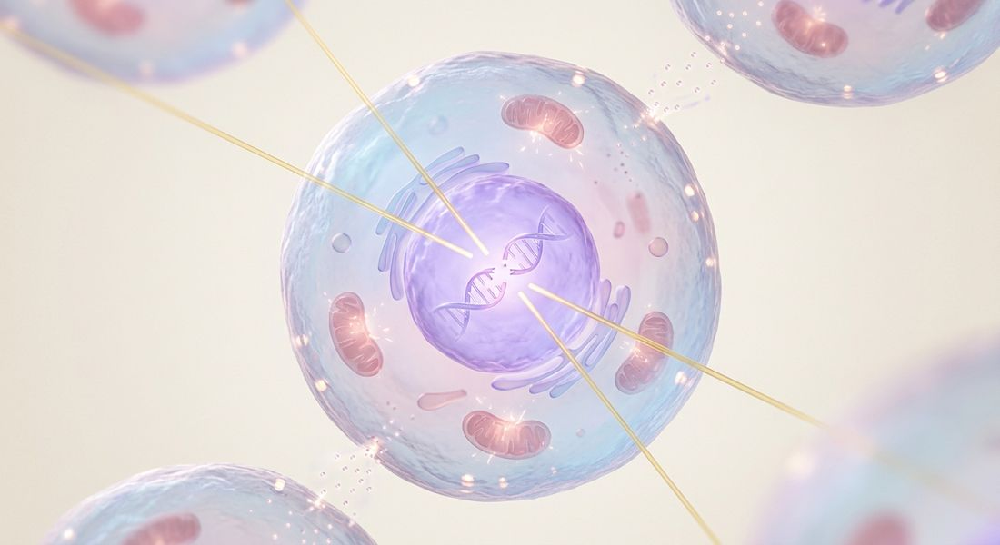
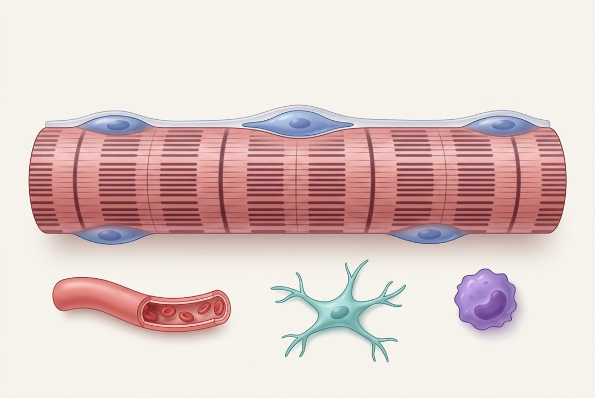

AI 生成示意图 · 射线穿过细胞示意图，自绘；右侧色条是本笔记对证据强度的主观评级，不是定量数据。
细胞致死（克隆源性死亡）的主靶是核 DNA，双链断裂最关键。
非 DNA 靶点也确实存在：膜神经酰胺、胞质照射致突变、旁观者效应。
不分裂的肌纤维，损伤可能更多来自非 DNA 和组织层面的通路。
| 损伤类型 | 每细胞每 Gy（量级） | 后果 |
|---|---|---|
| 碱基损伤 | > 1000 | BER 修复，多数无害 |
| 单链断裂 SSB | 约 1000 | 有互补链作模板，修得快 |
| 双链断裂 DSB | 约 20–40 | 修错 → 染色体断片、易位、双着丝粒 |
| 簇集损伤 | 随 LET 增加 | 一两圈螺旋内多处损伤，最难修 |
量级为放射生物学教材常用数值，不同测量方法差异较大；分类见 Ward 1988（PMID 3065826）、Lomax 2013（PMID 23849504）。
射线直接电离 DNA 分子本身。
射线先电离水，产生羟自由基 ·OH，再由 ·OH 攻击 DNA。X 线等低 LET 辐射以此为主（约 2/3）。
两条链同时断，没有完整的一条当模板；G1 期只能靠易错的 NHEJ 直接接上。
γH2AX 焦点：一个焦点大致对应一个 DSB（Rogakou 1998，PMID 9488723）。
Munro 1970：只照胞质要极大剂量才致死，照核则少量即可（Radiat Res 1970）。
Warters 1978：¹²⁵I 掺入 DNA 时高效致死，结合在膜上几乎无毒（Curr Top Radiat Res Q 1978）。
Taylor 1975：AT 患者细胞对辐射异常敏感（Nature 1975），致病基因后来证实为 ATM。
示意图，自绘。
和细胞周期的关系：照射后的命运几乎全由检查点决定：停下修、永久停（衰老），还是带伤闯过去（有丝分裂灾难）。这正是 U00 第 05 页那五种结局。
“死亡”的定义：放射生物学说的“杀死”通常是克隆源性死亡，即失去无限增殖能力。细胞可以还活着、还有功能。
照射使牛主动脉内皮细胞的鞘磷脂迅速水解为神经酰胺并凋亡；在不含细胞核的膜制备物上照射同样能激活（中性）鞘磷脂酶，说明信号可直接起于细胞膜。
J Exp Med · PMID 8046331 · doi:10.1084/jem.180.2.525
酸性鞘磷脂酶缺陷小鼠的肿瘤内皮照射后不凋亡，肿瘤也更耐照射：内皮的膜通路能左右组织层面的放射反应。
Science · PMID 12750523 · doi:10.1126/science.1082504
极低剂量 α 粒子只打中约 1% 的细胞核，却有约 30% 的细胞出现姐妹染色单体交换增加：旁观者效应。
Cancer Res · PMID 1423287
微束 α 粒子只照胞质即可诱发核基因突变，细胞毒性很小，且可被自由基清除剂抑制：经 ROS 间接伤到 DNA。
PNAS · PMID 10220401 · doi:10.1073/pnas.96.9.4959
注意：Wu 1999 和旁观者效应里，最终受伤的往往还是 DNA，只是射线没直接打中它。所以更准确的说法是：“DNA 损伤是核心读数，但损伤的来路不止一条”。
| DNA 直接/间接损伤 | 膜 · 神经酰胺 | 旁观者 / 胞质 / 线粒体 | |
|---|---|---|---|
| 证据强度 | 最强 定位、内照射、遗传学三线一致 | 确切 细胞类型依赖 | 确切 机制与体内权重仍有争议 |
| 剂量 | 全剂量范围 | 较高单次剂量更显著 | 低剂量时相对更突出 |
| 最敏感的细胞 | 增殖中的细胞 | 内皮细胞 | 与细胞间通讯、代谢状态有关 |
| 主要后果 | 克隆源性死亡、衰老、突变 | 快速凋亡、微血管损伤 | 基因组不稳定、慢性氧化应激 |
| U00 对应 | 检查点 → 五种结局 | 细胞命运：凋亡 | 微环境、SASP |
本页为综合整理（关联层面），“剂量”“最敏感细胞”两行是概括性描述，具体阈值因模型而异。

1卫星细胞：DNA 线2肌纤维：不分裂 3内皮4FAP：微环境线AI 生成示意图，比例非真实；标注为本笔记添加。
使卫星细胞丧失增殖能力的 γ 照射后，小鼠 EDL 不能代偿性肥大，但纤维类型的维持不受影响（Rosenblatt & Parry 1992，PMID 1490967）。
幼年小鼠单次 16 Gy 后：卫星细胞、内皮、FAP 减少；FAP 衰老、向成纤维分化，其分泌组损害卫星细胞分化与融合；56 天出现纤维化（Collao 2023，PMID 37671686）。
① 卫星细胞：DNA 损伤 → p53/p21 停滞或衰老 → 再生下降；② 微环境：FAP、内皮、线粒体与 ROS。待后续文献核实。
记忆每 Gy 产生的 SSB 和 DSB 大约各多少？
SSB 约 1000，DSB 约 20–40（教材量级）。
理解Warters 为什么用 ¹²⁵I？
¹²⁵I 衰变释放射程极短的俄歇电子，能量几乎只沉积在它所在的位置，可以分别“只照 DNA”或“只照膜”。
应用照射后的细胞第二天看起来正常，能说明它没受伤吗？
不能。它可能在之后第 1 到数次分裂时死于有丝分裂灾难，或已进入衰老。
分析Garcia-Barros 2003 说明了什么？
组织的放射反应不只取决于靶细胞自身 DNA，内皮细胞经膜神经酰胺的凋亡也能左右结局。
评价“辐射损伤肌肉＝打断肌纤维 DNA”对吗？
不全对。肌纤维不分裂，主要通过卫星细胞（DNA 线）和 FAP、内皮等微环境（非 DNA 线）受损。
图均为自绘或 AI 生成；未收录任何原文图片。实验细节以原文为准。